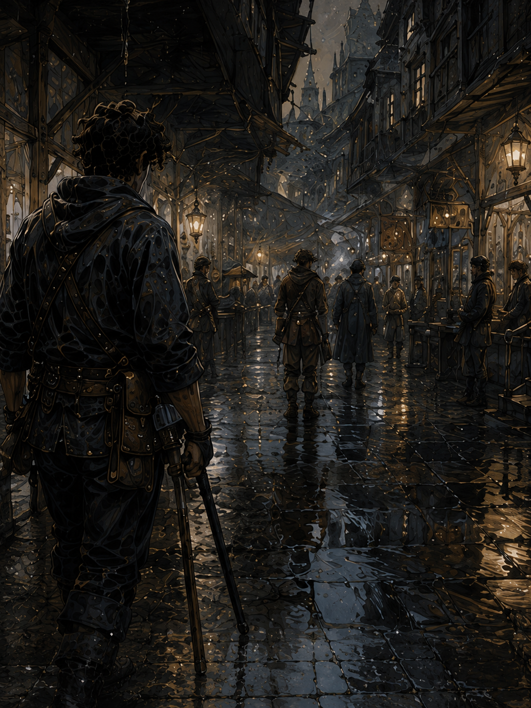
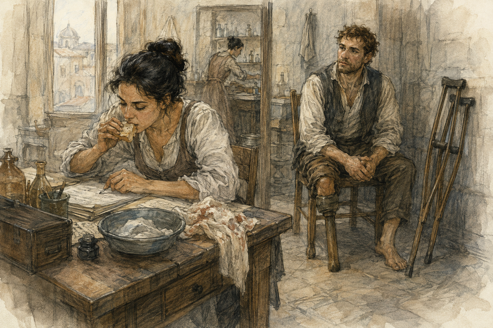

Hessa was not there.
This was unexpected because the appointment was at Hessa's rooms, and Hessa was usually the part of Hessa's rooms that made them useful.
The door was unlocked.
Nerin was inside.
She looked at me, looked toward the back room, then held up one finger.
“Wait.”
“Is she with someone?”
“Yes.”
“Should I come back?”
“No.”
That was all I got.
I sat.
The bad chair remained bad.
Consistency.
There were sounds from behind the closed inner door.
Not dramatic sounds.
Movement.
A basin set down.
Low voices.
Once, Hessa said, “Again.”
Then silence.
I looked at the copper strip on the side table.
It was not the same strip.
Or maybe it was and had been moved.
I did not touch it.
Personal record.
Nerin was sorting folded cloth into three piles.
I watched.
She noticed.
“What?”
“Nothing.”
“You're counting.”
“I am not.”
“You looked at each pile.”
“That is not counting.”
“How many?”
I knew.
I refused to answer.
She smiled.
The inner door opened.
A man came out with his right hand wrapped from palm to wrist.
He was older than me by enough that I could not estimate it usefully.
His face was pale.
Hessa came behind him.
“Keep it dry today.”
He nodded.
“If the fingers go cold, blue, or numb, come back.”
Another nod.
“Not tomorrow. Come back.”
“Yes.”
He left.
Hessa looked at me.
“You're early.”
“I am exactly on time.”
She looked at the wall clock.
“You're early by three minutes.”
“That is not early in a meaningful sense.”
“It is three minutes.”
“I waited longer than three minutes.”
“Yes.”
“So I was not early for the appointment that actually occurred.”
Hessa closed her eyes.
Nerin laughed into the cloth.
“Come back in half an hour,” Hessa said.
I stopped.
“What?”
“Half an hour.”
“Why?”
“Because I need to clean the room, write notes, eat something, and sit down.”
“You are sitting now.”
“I am standing.”
“Right.”
She pointed at the door.
I looked at her.
She looked tired.
Not injured.
Not collapsing.
Just tired.
This was somehow more persuasive.
“Half an hour?”
“Yes.”
“Exactly?”
“No.”
“Hessa.”
“Between half an hour and forty-five minutes.”
“That is a range.”
“Yes.”
“I can work with a range.”
“I know. Go.”
I went.
The street had nothing prepared for me.
This was rude.
I could not go far because thirty to forty-five minutes was long enough to start something and short enough to make starting it stupid.
I bought a small meat pie.
Then another because the first was small in the way merchants use the word small to mean insulting.
I ate sitting on the edge of a dry horse trough.
The stone was cold.
My residual limb felt normal.
My hands felt normal.
Everything felt normal.
I considered what Hessa had been doing.
Hand injury.
Maybe burn.
Maybe crush.
Maybe magic.
Not my business.
This phrase was getting suspiciously easy.
I finished the second pie.
There were still twenty minutes.
I watched a dog fail to steal cabbage.
The dog had a strategy.
It waited until the cabbage seller turned.
Then approached from the side.
The problem was that the dog was white and the stall cloth was dark blue.
Also the seller had apparently met the dog before.
“Don’t.”
The dog stopped.
Waited.
Seller turned.
Dog moved.
“Don’t.”
This happened four times.
The dog did not update.
I respected commitment.
At thirty-seven minutes, I returned.

Hessa was eating bread.
I stopped in the doorway.
She looked at me.
“You said half an hour to forty-five minutes.”
“Yes.”
“It has been thirty-seven.”
“Yes.”
“I am inside the interval.”
“Sit.”
Good.
Nerin was gone.
The inner room smelled faintly of boiled cloth and something metallic.
The examination cot had fresh covering.
Hessa finished the bread.
I waited.
This was difficult.
She drank water.
I continued waiting.
This was more difficult.
Finally she said, “How are you?”
“Fine.”
“That answer has never helped anyone.”
“Residual limb baseline. No swelling after yesterday because yesterday I did nothing strenuous. Hands fine. Right calf and hip fine. No change in phantom symptoms after the last draw. No pain, cold, heat, cramping, pressure, or persistent extension. I wrote it down.”
“In paragraphs?”
“Yes.”
“Good.”
“I used semicolons.”
“I don't care.”
“You cared about tables.”
“I care about you not turning every sensation into a private experiment.”
“I did not.”
“Good.”
She stood.
“Leg.”
Same examination.
Wrapping off.
Skin.
Temperature.
Pressure.
Questions.
Nothing interesting.
She rewrapped it.
Then sat.
I looked at the copper strip.
She did not pick it up.
I waited.
She still did not pick it up.
“Are we drawing?”
“No.”
I stared.
“No?”
“No.”
“Why?”
“I don't want to.”
That was not an acceptable medical explanation.
I said this.
She leaned back.
“I treated someone before you.”
“I noticed.”
“It required sustained channel work.”
I stopped.
There.
Relevant.
“How much?”
“Not your business.”
“Right.”
“I am not concerned that I would hurt you.”
“That sounds promising.”
“I am also not interested in supervising an unnecessary test while I am tired enough to know I am tired.”
I looked at the copper strip.
“Unnecessary.”
“Yes.”
“We scheduled it.”
“We scheduled an assessment.”
“Which has included a draw.”
“Previously.”
“You changed the plan.”
“Yes.”
“Because you are tired.”
“Yes.”
I considered this.
It was irritating.
Also correct.
Probably.
“Would the draw itself be dangerous?”
“I just told you I am not concerned I would hurt you.”
“So why not?”
“Because the question is not whether I can probably supervise it adequately.”
I hated the word probably.
Hessa saw that.
“Exactly.”
“You want margin.”
“I want my judgment to be boring.”
That was annoyingly good.
I looked at her hands.
No tremor.
No visible problem.
She was not impaired.
She was simply declining to spend expertise at the edge of what she considered useful.
“What did you learn from examining me?”
“That you had no concerning delayed effect from the last draw.”
“That matters.”
“Yes.”
“So this appointment still produced information.”
“Yes.”
I brightened.
Hessa pointed at me.
“Do not become pleased because I found a way to make cancellation sound productive.”
“I am not.”
“You are.”
“A little.”
She sighed.
“When next?”
“Tomorrow?”
“No.”
“Day after?”
“Yes.”
“Why not tomorrow?”
“Because there is no urgency.”
“There is to me.”
“That is not the same thing.”
I leaned back.
Bad chair.
Still bad.
“Three successful draws.”
“Yes.”
“No delayed effects.”
“So far.”
“Variable subjective sensation.”
“Yes.”
“No shaping.”
“Yes.”
“No casting.”
“Yes.”
I paused.
“Are we getting closer to shaping?”
Hessa was quiet.
Not long.
Long enough.
“Maybe.”
I felt my entire body become more attentive.
She saw it.
“Do not do that.”
“Do what?”
“Turn one word into permission.”
“I did not.”
“You inhaled like a hunting dog.”
“That is insulting.”
“It was accurate.”
“Maybe means what?”
“It means I am beginning to think about what the first shaping test would need to be.”
There.
Not clearance.
Not a plan.
Still.
There.
“What would it be?”
“I have not decided.”
“Barrier?”
“No.”
Immediate.
“Why?”
“Too familiar.”
I frowned.
“That seems like an advantage.”
“For performance, perhaps. Not for the first question I want answered.”
“What question?”
“Whether you can deliberately alter drawn mana in a very small way without falling into an old trained pattern.”
I stopped.
That made sense too quickly.
Barrier was not merely a spell.
It was practiced.
Repeated.
Body-known.
Possibly exactly the wrong thing if she wanted to distinguish deliberate shaping now from the machinery of prior habit.
“You don't want automatic.”
“I don't want more variables than I need.”
“What kind of shaping?”
“I said I have not decided.”
“Direction?”
“No.”
“Compression?”
“No.”
“Release pattern?”
“Greg.”
“Sorry.”
I was not sorry.
I was extremely interested.
She knew.
“That is not clearance,” she said.
“I know.”
“You may not practice drawing.”
“I know.”
“You may not try to feel the edge of shaping without drawing.”
I opened my mouth.
“No.”
I closed it.
That had been a good idea.
Apparently not.
“You may not rehearse Barrier mentally as a magical exercise.”
“That is impossible to define.”
“Then don't deliberately sit there imagining the mana sequence.”
I stared.
“You are criminalizing thought.”
“I am telling you not to train.”
“Thought is not training.”
“Yours is.”
Unfair.
Possibly fair.
“What can I do?”
“Live until the day after tomorrow.”
“That seems broad.”
“Yes.”
“Can I cook?”
“If the keeper permits it.”
“He did.”
“Then apparently.”
“Cards?”
“Yes.”
“Work?”
“If someone pays you.”
“Pessa?”
Hessa considered.
“Tomorrow, if your body remains at baseline, I have no medical objection to you asking her.”
Important wording.
“No medical objection.”
“Yes.”
“Not clearance.”
“Pessa decides whether she wants to train you.”
Different jurisdiction.
I did not say it.
Personal record.
Hessa stood.
Appointment over.
I remained seated.
“What?”
“I am adjusting to the fact that I came here for magic and received no magic.”
“You received an examination.”
“Yes.”
“And a future maybe.”
I looked at her.
She smiled.
That was malicious.
“You did that intentionally.”
“Yes.”
I stood.
Both crutches.
No phantom step.
No unusual sensation.
No magic.
At the door I stopped.
“Hessa.”
“What?”
“The man before me.”
Her face changed slightly.
Closed.
“Not your business.”
“I know.”
I hesitated.
“Is he all right?”
She considered that too.
“Yes.”
That was enough.
I left.
Outside, the white dog was across the street.
It had acquired cabbage.
I had missed the breakthrough.
The dog saw me looking and ran.
I laughed.
No draw.
No shaping.
No answer.
A maybe.
Apparently that was enough to ruin the rest of my day in the best possible way.